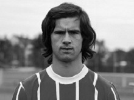
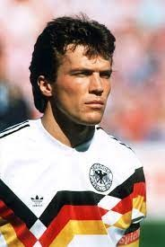
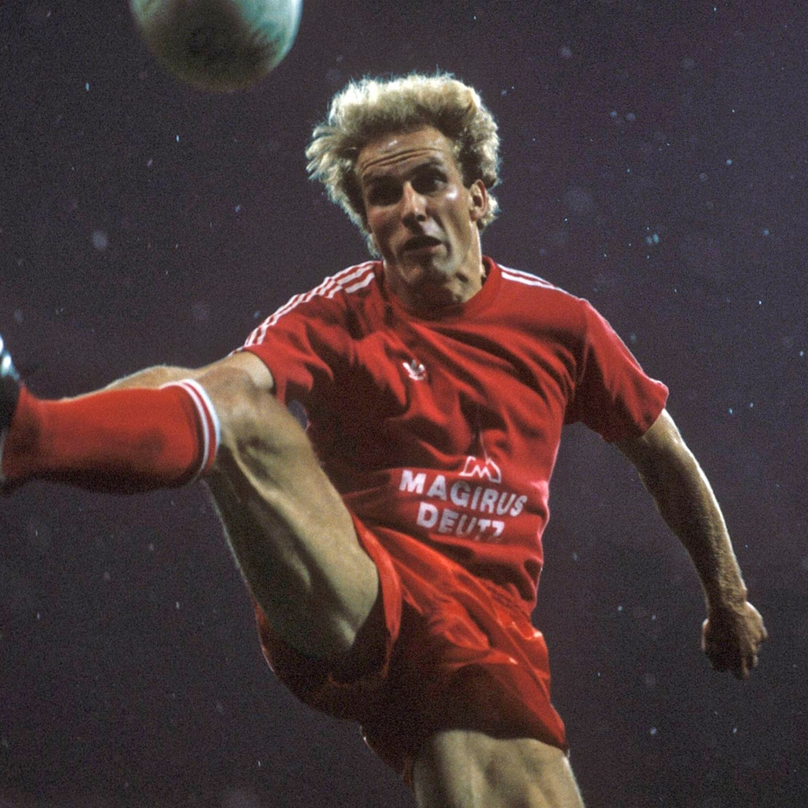
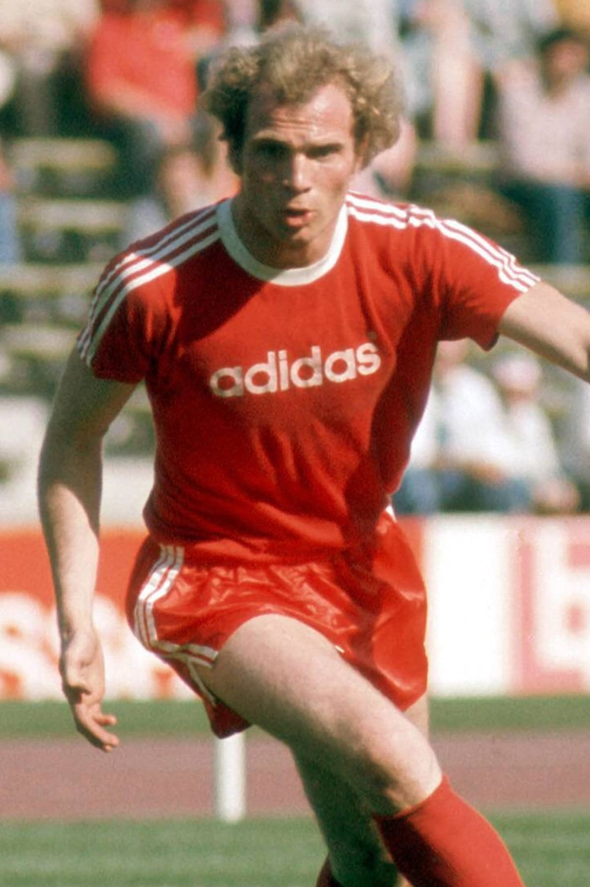
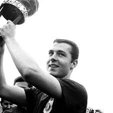

Gerd Müller
- Најдобар стрелец во историјата на Бундеслигата(365)
- Најдобар стрелец во историјата на Баерн Минхен
- Седумпати најдобар стрелец во Бундеслигата, двапати во Европа
- Двапати прогласен Германски играч на годината, еднаш Европски

Lothar Matthäus
- Седум кратен освојувач на Бундеслигата со Баерн Минхен
- Три пати го има освоено купот(DFB-Pokal)
- Европски шампион со Баерн
- Светски шампион со Германија
- Двапати прогласен Германски играч на годината, еднаш Европски

Karl-Heinz Rummenigge
- 162 голови на 310 Бундеслигашки натпревари
- Четврт најдобар стрелец во историјата на Баерн
- Трипати најдобар стрелец во Бундеслигата
- Еднаш прогласен за Играч на годината во Германија, двапати во Европа
- CEO на Баерн Минхен

Uli Hoeneß
- 86 голови на 239 Бундеслигашки натпревари
- Двапати освојувач на Бундеслигата, двапати Европски шампион, еднап Светски
- Еден од најуспешните менаџери во историјата на Баерн Минхен

Franz Beckenbauer
- Четирипати Германски шампион
- Трипати Европски шампион
- Четирипати Германски играч на годината
- Светски шампион со Германија како играч(1974)
- Светски шампион со Германија како менаџер(1990)